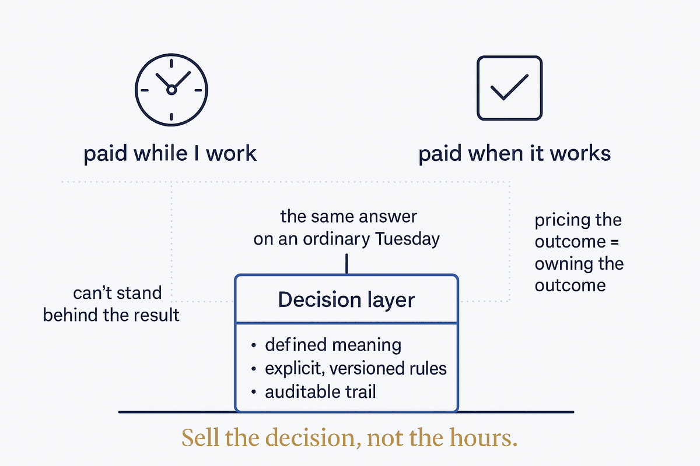

Advice is priced by the hour because nobody can stand behind it; an outcome can be priced — and owned — only once a governed decision layer makes it repeatable.

Most expertise is sold by the hour, and the reason is rarely admitted: you bill for time because you can't stand behind the result. The advice is sound, but whether it works depends on a dozen things you don't control, so the honest unit is effort, not outcome. That's the ceiling almost every knowledge business hits — paid for showing up, not for what shows up.
The move past it isn't confidence or salesmanship. It's structure. An outcome can be priced — and owned — only when the decision that produces it is repeatable: the same inputs, the same governed logic, the same answer on an ordinary Tuesday. That repeatability is exactly what a decision layer provides — a place where the meaning is defined, the rules are explicit and versioned, and every decision leaves an auditable trail. Governed, versioned, auditable decision logic is the thing that lets you say "I'll be paid when it works" instead of "I'll be paid while I work."
So this is the same "structure beats magic" thesis, pointed at the business model. The market is starting to name the destination — analysts call it moving from data as a service to decision as a service, and they've noticed the platforms that get there trade at roughly twice the multiple of the ones that don't. But the label is downstream of the discipline. The reason a decision can be priced is that someone built the layer beneath it: the semantics that fix what the words mean, the rules that carry their own exceptions, the validation that flags rather than guesses. Skip that layer and "outcome-based" is just a payment term you can't honour.
There's a trade the label hides, and it's worth saying plainly: pricing on the outcome means taking accountability for the outcome. The higher multiple is not a reward for better positioning — it's compensation for standing behind the decision when it's wrong. That's only survivable if the layer underneath is real. Which is the whole point: the structure isn't there to make the work look rigorous, it's there so you can afford to be paid for the result. First you build the layer that makes decisions repeatable and defensible. Only then can you sell what everyone actually wants to buy — not your hours, but the decision itself.